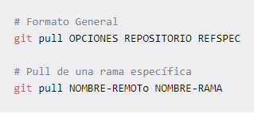

git pull es un comando de Git utilizado para actualizar la versión local de un repositorio desde otro remoto. Es uno de los cuatro comandos que solicita interacción de red por Git. Por default, git pull hace dos cosas. Actualiza las referencias de rama remota para todas las demás ramas.Usa git pull para actualizar un repositorio local del repositorio remoto correspondiente. Por ejemplo: Mientras trabajas localmente en main, ejecuta git pull para actualizar la copia local de main y actualizar las otras ramas remota de seguimiento remoto.
